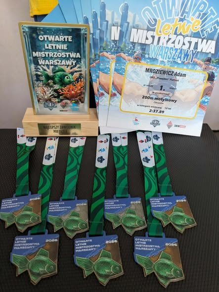

15 medali na Mistrzostwach Warszawy
Na 50-metrowej pływalni Warszawianki odbyły się Otwarte Letnie Mistrzostwa Warszawy w Pływaniu. Barwy klubu reprezentowali Róża Zimnicka, Adam Mroziewicz, Jan Zimnicki i Roman Łyszkowski. Zawodnicy zdobyli 15 medali i ustanowili wiele rekordów życiowych, a Adam Mroziewicz wygrał 200 m stylem motylkowym z czasem 2:37,89.
Gratulujemy zawodnikom, a trenerowi Mariuszowi Mroziewiczowi dziękujemy za przygotowanie do startu.